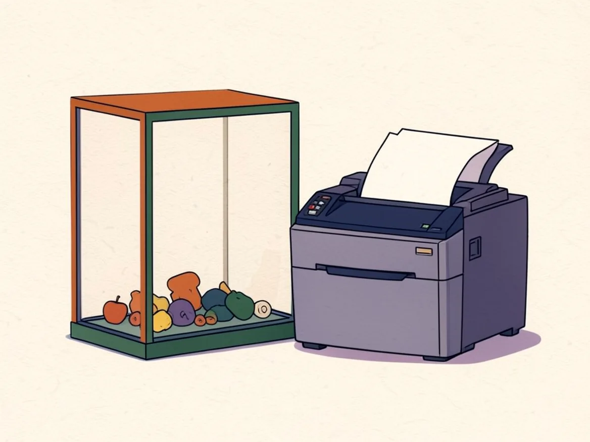

View и copy: стекло и ксерокс Где вы смотрите на те же данные, а где держите копию
Срез массива — не копия. Изменение «окна» меняет исходные данные, и это самая незаметная категория багов в NumPy и pandas. Зато когда копия действительно нужна, её делают явно.
Словарь главы — если забыли термины
- view
- Новый массив, смотрящий в те же данные: правка видна в исходнике.
- copy
- Полная копия данных: изменения не влияют на исходник.
- base
- Ссылка на массив-владелец буфера;
.base is None— массив владеет данными. - owndata
- Флаг «массив владеет своим буфером».
- shares_memory
- Проверка, делят ли два массива общую память.
- CoW
- Copy-on-Write в pandas: копия создаётся при попытке записи, а не сразу.
01Зачем это backend-разработчику
- Тихие баги. «Поправил локальную копию, а изменился отчёт» — классика. Причина — view.
- pandas Copy-on-Write. С третьей версии pandas это поведение по умолчанию: цепочки присваиваний больше не меняют исходную таблицу.
- Память. Копия миллиона чисел — 8 МБ; view — почти ноль. На больших данных это разница между работой и падением.
- Собеседование: «срез — это копия?», «что делает .copy()», «почему изменение фильтра не меняет массив» — проверяют модель памяти.
02Ассоциация-якорь: стекло и ксерокс
View — стеклянная витрина. Через стекло видно тот же товар, и если поправить его рукой, изменение увидят все, кто смотрит в витрину.
Copy — ксерокс. На копии можно рисовать что угодно: оригинал в витрине не изменится. Вопрос «view или copy?» — это вопрос «смотрю через стекло или держу ксерокопию».

03Ассоциативный ряд: восемь звеньев
- Срезокно: обычно view
- reshapeчаще view, но не всегда
- Транспонированиеview с другими strides
- Маска и fancyвсегда копия
- .copy()явная независимость
- .baseна кого смотрит окно
- owndataвладеет ли массив буфером
- shares_memoryпроверка общего буфера
04Схема: один буфер против двух

05Как это устроено на самом деле
Массив NumPy — это буфер плюс описание: shape, dtype, strides. View — новый объект-описание, который смотрит в тот же буфер со своим смещением и шагами. Именно поэтому срез «бесплатный»: данные не копируются.
| Операция | View или копия | Почему |
|---|---|---|
| a[1:3] | view | непрерывный диапазон того же буфера |
| a.T | view | те же данные, другие strides |
| a.reshape(...) | обычно view | если данные непрерывны |
| a[mask] | копия | нельзя описать окном |
| a[[0, 2]] | копия | продвинутая индексация |
| a.copy() | копия | явный запрос |
Когда reshape копирует
Если данные в памяти лежат не подряд (например, после транспонирования), reshape
не может описать их новыми strides — и делает копию. Правило простое: «reshape — обычно view»,
но не «всегда».
pandas и Copy-on-Write
В pandas 3 поведение Copy-on-Write включено по умолчанию: любая производная таблица (срез, выборка
колонки) при первом изменении получает свою копию, а исходная не меняется. Поэтому
df["a"][0] = 5 больше не работает как «запись в таблицу» — нужно явное
df.loc[0, "a"] = 5.
06Лаборатория: запустить и увидеть
Фрагменты файла 11_views_copies_lab.py.
Шаг 1. Срез — окно: правка видна в исходнике
base = np.array([[0, 1, 2, 3], [4, 5, 6, 7], [8, 9, 10, 11]]) view = base[1:, 2:] print(view.base is base, view.flags.owndata) view[:] = -1 print(base)
owndata=False — массив не владеет буфером. Изменение окна изменило исходник
ровно там, куда окно смотрит.
Шаг 2. Копия независима
safe = base[[0, 1]].copy() safe[:] = 0 print(base) print(np.shares_memory(base, safe))
Шаг 3. Маска и fancy — всегда копия
fancy = base[[0, 2]] print(fancy.base, fancy.flags.owndata) masked = base[base > 2] print(masked.base)
.base is None означает «массив владеет своим буфером»: это копия.
Правка такой выборки исходный массив не меняет.
Шаг 4. reshape и транспонирование: обычно view
fresh = np.array([[1, 2, 3], [4, 5, 6], [7, 8, 9]]) print(fresh.reshape(1, 9).base is fresh) print(fresh.T.base is fresh) print(fresh.T.strides, fresh.strides)
Транспонирование не копирует: меняются только strides. Именно поэтому a.T мгновенный
даже для больших матриц.
Шаг 5. Когда reshape вынужден копировать
strided = fresh.T # view flat = strided.reshape(9) # данные не подряд — нужна копия print(strided.flags.c_contiguous) print(np.shares_memory(strided, flat))
Шаг 6. pandas: Copy-on-Write
df = pd.DataFrame({"a": [1, 2, 3], "b": [10, 20, 30]})
series = df["a"]
series.iloc[0] = 99
print(df["a"].tolist()) # исходник не изменился
df.loc[0, "a"] = 99
print(df["a"].tolist()) # явное присваивание работает
Это не баг, а гарантия: производные объекты не могут тайно менять исходную таблицу. Запись — только через явные методы pandas.
07Мост: где это важно в pandas и SQL
pandas: методы, которые возвращают копию или view
df["a"] # Series-представление (CoW)
df.copy() # явная копия
df.sort_values("a") # новая таблица, исходник прежний
df.drop(columns=["b"], inplace=True) # меняет df
Общее правило pandas: по умолчанию операции возвращают новый объект; inplace=True
и .loc[...] = ... меняют исходный. После CoW это стало предсказуемее.
SQL: VIEW — тоже окно, но только для чтения
CREATE VIEW active_users AS SELECT * FROM users WHERE deleted_at IS NULL; SELECT * FROM active_users; -- окно в данные, а не копия таблицы
Аналогия неполная, но полезная: SQL-представление тоже не хранит данные, а описывает, как их прочитать. В отличие от массива, оно не даёт менять данные «через себя» без дополнительных условий.
08Пять ошибок, на которых спотыкаются
patch = arr[:10]; patch[:] = 0 обнулило первые 10 элементов исходного массива.
arr[:10].copy(), если нужна независимость.После транспонирования reshape обычно копирует: шаги не позволяют
описать данные окном. Но если раскладка совпала (например, квадратная матрица), результатом может
остаться view — проверяйте через np.shares_memory(base, result).
np.shares_memory(a, b).df["a"][0] = 5 в pandas 3 не меняет таблицу (и раньше работало ненадёжно).
df.loc[0, "a"] = 5 — явная индексация.np.asarray(arr) не копирует, если тип совпадает. Правки «копии» видны в исходнике.
np.array(arr, copy=True) или arr.copy().np.broadcast_to(...) — view только для чтения, писать нельзя.
.copy(), потом менять.09Вопросы с собеседования
Что такое view? Что такое copy?
View — новый объект-описание, смотрящий в тот же буфер. Copy — независимый буфер с копией данных. Изменения через view видны в исходнике, через copy — нет.
Срез массива — это копия?
Нет, это view. В отличие от списка Python, где срез копирует. Срез массива позволяет читать и писать в исходные данные.
Какие операции возвращают копию?
Копию дают маска, список индексов и явный .copy().
reshape — view или копия: зависит от раскладки памяти, проверяйте
shares_memory.
Как проверить, делят ли массивы память?
np.shares_memory(a, b) — точная проверка; np.may_share_memory — быстрая, но может давать ложные срабатывания.
Зачем нужен .base?
Он показывает, на кого смотрит view. Если base is None, массив владеет своим буфером; иначе это представление.
Что такое Copy-on-Write в pandas?
Режим, при котором производные объекты не меняют исходный: копия создаётся при первой записи. С pandas 3 это поведение по умолчанию.
Почему view экономит память?
Он не выделяет новый буфер: данные общие, отличается только описание — смещение и шаги. Копия миллиона чисел стоит 8 МБ, view — почти ничего.
Когда копия всё-таки нужна?
Когда массив передаётся в код, который может его менять, или когда результат должен жить независимо. Тогда .copy() — часть контракта, а не перестраховка.
10Три задачи: сначала своя попытка
01 Найдите баг
Функция должна возвращать массив без отрицательных значений, не меняя исходный. Что не так?
def clean(data):
data[data < 0] = 0
return data
Показать решение
def clean(data):
out = data.copy()
out[out < 0] = 0
return out
Что важно. Маска в присваивании меняет массив на месте, а не создаёт новый. Копия перед записью — явный контракт «я не трогаю чужие данные».
02 Окно или копия
Для каждой операции скажите, view это или копия: a[2:5], a[[1,3]], a.T, a[a > 0].
Показать ответ
a[2:5] — view (непрерывный диапазон). a[[1,3]] — копия (fancy).
a.T — view (меняются strides). a[a > 0] — копия (маска).
np.shares_memory(a, result).03 Безопасная правка pandas
В таблице нужно обнулить значения колонки там, где возраст меньше 18. Напишите корректный код для pandas 3.
Показать решение
df.loc[df["age"] < 18, "amount"] = 0 # или без изменения исходной таблицы: df2 = df.assign(amount=df["amount"].mask(df["age"] < 18, 0))
Что важно. Явный .loc — единственный надёжный способ
писать в таблицу. assign возвращает новую таблицу.